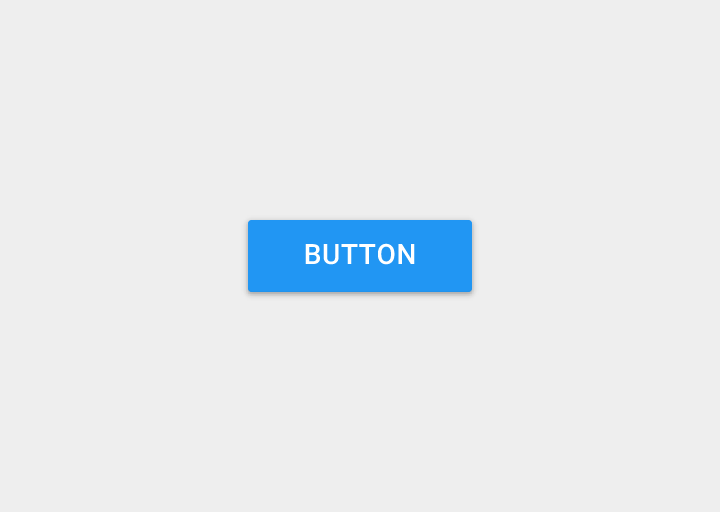
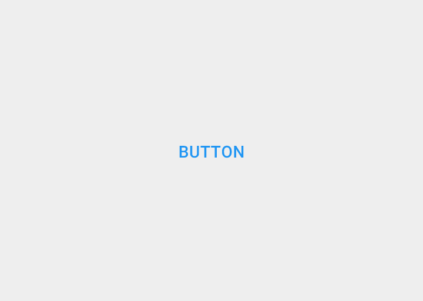
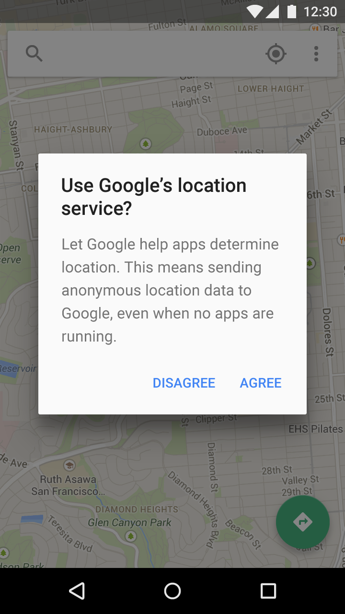

버튼에는 3가지의 표준 유형이 있습니다:
- 플로팅 액션 버튼(FAB): 들려 있으며 누를 때 잉크 반응을 보여주는 둥근 머티리얼 버튼.
- 레이즈드(Raised) 버튼: 들려 있으며 누를 때 잉크 반응을 보여주는 일반적인 직사각형 머티리얼 버튼.
- 플랫(Flat) 버튼: 들려 있지는 않지만 잉크 반응을 보여주는 잉크로 만든 버튼.
플로팅 액션 버튼

레이즈드 버튼

플랫 버튼
플로팅 액션 버튼의 예제
레이즈드 버튼의 예제

플랫 버튼의 예제
버튼 스타일 고르기
버튼 스타일 고르기는 버튼의 수위(Primacy), 화면에서 컨테이너의 수, 그리고 화면 레이아웃에 달려 있습니다.
기능: 그것이 플로팅 액션 버튼이 되기에 충분히 중요하고 흔합니까?
차원(Dimension): 들어갈 컨테이너 그리고 z 공간 레이어가 당신의 화면에 얼마나 있는지에 따라서 레이즈드 또는 플랫을 선택하십시오. 화면에 많은 수의 개체 레이어가 있지 않아야 합니다.
레이아웃: 컨테이너 당 버튼은 주로 한 종류를 사용합니다. 혼합된 버튼은 중요한 기능을 강조하는 것과 같이 당신이 그에 대한 좋은 이유를 가지고 있을 때에만 사용하십시오.